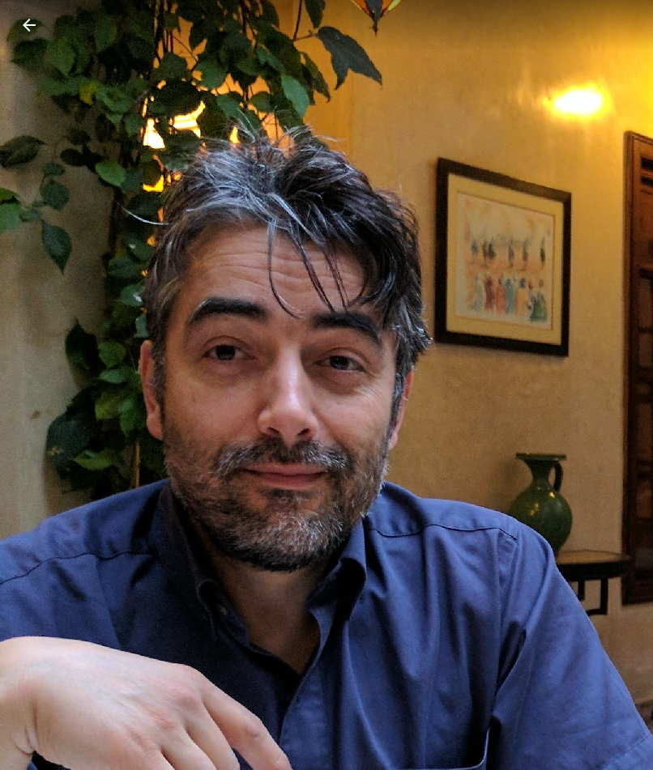
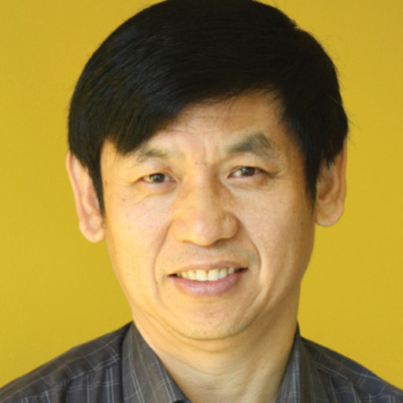

Steering Committee
Chair of the Steering Committee

Steering Committee
Prof. Michael Sheng
Macquarie University, Australia

Professor Osmar R. Zaiane
University of Alberta, Canada

Professor Chengqi Zhang
University of Technology Sydney, Australia
Associate Professor Jianxin Li
Deakin University, Australia
Associate Professor Guodong Long
University of Technology Sydney, Australia
Dr. Weitong Chen
The University of Adelaide, Australia